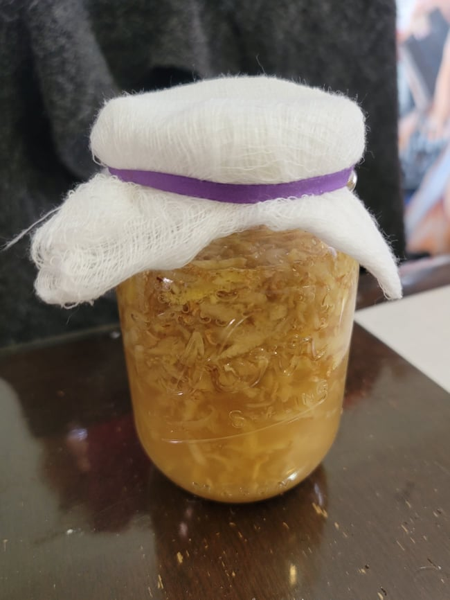

Ginger Bug

Ingredients:
- 1 cup Water, non-chlorinated like bottled water
- Ginger, grated or minced, peeled if not organic
- Sugar
Instructions:
- Combine the water with 1 tablespoon each of the grated ginger and sugar into a mason jar. Cover the mason jar with cheesecloth and a rubberband and let sit in a dark and room temperature area.
- Every day until the ginger bug is very foamy and active, about 5 days, feed the ginger bug by adding in 1 more tablespoon ginger and sugar and mixing well before re-covering with the cheesecloth and returning to the dark room temperature area.
- After each use, simply replace the amount used with new water continue to feed regularly.
- The ginger bug can be placed into the fridge to sleep and be fed only once a week when not in regular use.